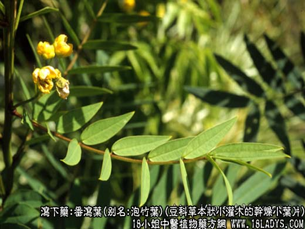
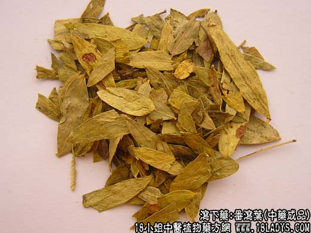
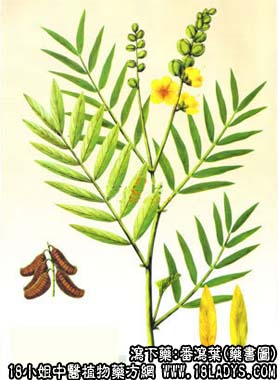

本品为豆科草本状小灌木狭叶番泻或尖叶番泻的干燥小叶片。
产地：狭叶番泻主产印度，又叫印度番泻叶。尖叶番泻主产阿联，由亚历山大港外运，又叫亚历山大番泻叶。过去进口主要为印度番泻叶，现在我国云南已引种成功。
性状鉴别：为完整或破碎的叶，并杂有细梗。叶片长卵形，卵状披针形至线状披钱形，全缘，叶端尖或微凸，基部不对称。上表面黄绿色，下表面灰绿色，叶脉突出，两面均有毛。质脆易碎。有青草气，味微苦。富粘性。以身干尖叶、色黄绿、完整、无泥沙者为佳。
主要成分：含葸甙1%～1.5%，主要为番泻甙A、B、大黄酚、芦荟大黄素、大黄酸，又含黄酮类衍生物（山奈酚、异鼠李素）等。
功效与作用：泻下，有较强的刺激性，促进肠蠕动，服后3小时泻下数次。
炮制：剔除枝梗，生用。
性味：甘苦、寒。
归经：入大肠经。
功能：消积滞、通大便。
主治：食物积滞，胸腹胀满，大便不通。
临床应用：适用于热积便秘，如胃肠积热而致的便秘、食物积滞、胸腹胀满及腹水等症。本品作用近于甘遂、效力和安全度较好。也用于术前清洁肠道。
使用注意：虚弱者、孕妇、经期、产后授乳期均忌用。有痔疮者亦不宜用。又煎服宜后下，久煎则无力。
用量：缓下1.5～3g，攻下用3~9g。
处方举例：番泻叶饮：单用番泻叶的泡出液（每次用番泻叶6～9g），可作为一次泻下用。
注：过去曾进口国一批番泻叶，发现其中多有圆形叶片掺杂。叶片呈卵形成倒卵形，先端钝圆或为微凹或具刺突，基部对称或不对称。表面黄灰绿色至红棕色，披灰白色毛茸。此种叶片的葸醌衍生物含量极微，须注意区分。